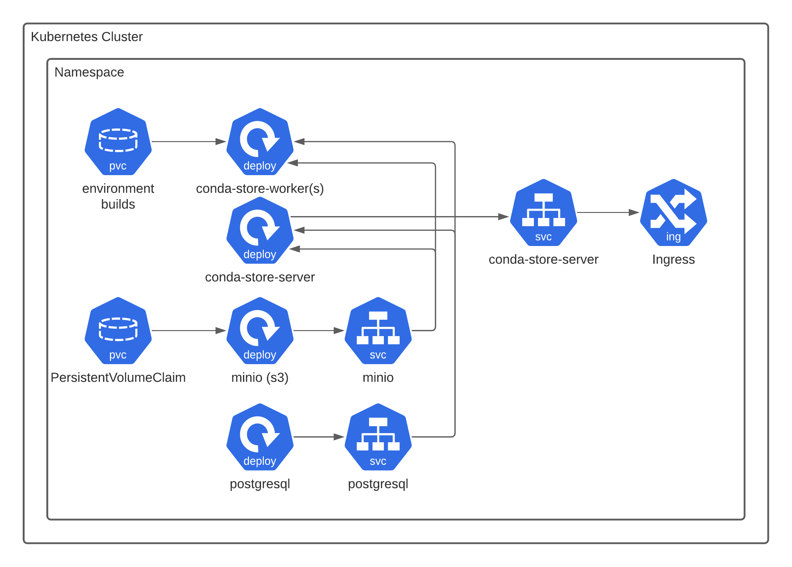

Installation#
Linux#
You can install conda-store using conda :
conda install conda-store-server>=0.4.10
Once installed, start conda-store using :
conda-store-server --standalone
You can then access conda-store on port 5000 of the machine running it.
Kubernetes#

The following will describe a local
Kubernetes installation via minikube. The
files required are in examples/kubernetes
minikube start --cpus 2 --memory 4096 --driver=docker
Now we deploy the conda-store components. Note that conda-store is
compatible with any general s3 like provider and any general database
via SQLAlchemy. Currently the docker image is build with support for
PostgreSQL and SQLite. Consult the SQLAlchemy
documentation
on supporting your given database and then creating a custom docker
image with your required database. Not all database engines were added
to save on image size. Additionally You may not need to use MinIO and
PostgreSQL deployments and use existing infrastructure. In the case of
AWS this may mean using Amazon RDS and
s3. Consult your cloud provider for
compatible services. In general if it is supported by SQLAlchemy and
there is a s3 compatible object store conda-store will
work. kustomize is
being used for the deployment which is part to the Kubernetes project
itself.
kubectl apply -k examples/kubernetes
Make sure to change all the usernames and passwords for the deployment.
If your installation worked you should be able to port forward the conda-store web server.
kubectl port-forward service/conda-store-server 5000:5000
Then visit via your web browser http://localhost:5000
For additional configuration options see the administrative guide
A good test that conda-store is functioning properly is to apply the
jupyterlab-conda-store pod as a quick test. It will cause
conda-store to build an environment with JupyterLab and NumPy. This
pod is not needed for running conda-store.
kubectl apply -f examples/kubernetes/test/jupyterlab-conda-store.yaml
If you instead mount a
ReadWriteMany
volume to the container conda-store-worker like nfs or
Amazon EFS. You can mount the environments
built via conda-store and use environments this way. Note that NFS can
be significantly slower when it comes to creating environments (see performance docs).
Docker#
To install on a local docker daemon there is an existing
docker-compose.yaml for deployment. The example files required are in
examples/docker
docker-compose up --build
Then visit via your web browser https://conda-store.localhost/conda-store. By default, you can log in with any username and use the password password, since we are using the DummyAuthenticator
Local Automated systemd Install#
Not all environment are containerized and conda-store recognizes
that. The goal of CONDA-STORE is to provide Conda environments in as
many ways as possible so it SHOULD support non-contianerized
environments. The example files required are in
examples/ubuntu2004.
This example is not fully complete in that it does not install
conda-store and get it running due to the conda-forge
package.
If you would like to test it in a VM use the following. The following
Vagrantfile is only compatible with libvirt.
vagrant up
However if you want to do a local deployment use
ansible-playbook -i <inventory> playbook.yaml